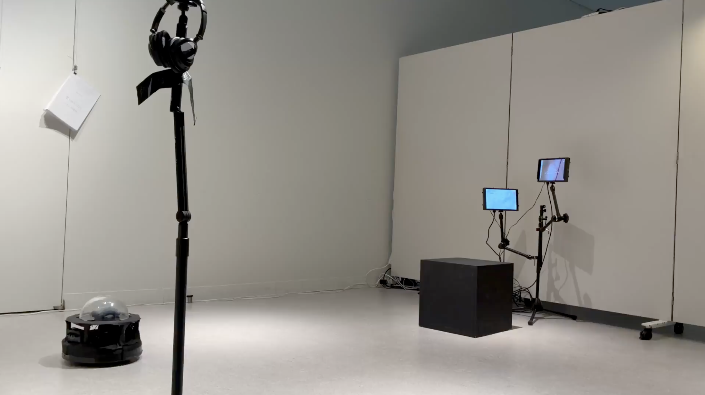

Pooling Planets / 惑星をプールする
at CCBT Future Ideations Camp Vol.9

|
Presented at CCBT Future Ideations Camp Vol.9. MembersKoki Sakakihara 惑星をプールするフィクションには現実と異なるリアリティがある。では、フィクションをさらにもう一度フィクションにすると、そこに生まれるものは何だろうか。 小惑星はテクノロジーの最先端にある存在である。人は多くのテクノロジーを費やしてそこに辿り着こうとし、そこから新たなテクノロジーを得ようとしてきた。一方で、時に世俗的な命名がされ、そこへの探索が親しみの持てる物語として広く共有されもする。 それをモチーフにすることで、いくつかのフィクションをさらに立ち上げてみる。観測された写真をもとに生み出した小惑星を3Dプリンターで出力し、その構造物を用いて歌や装置、言葉や身体を展開する。 こうしたいわば「フィクションの再フィクション化」を通じて感じられてくる奇妙な面白さを体感してほしい。 Pooling PlanetsFiction has a reality distinct from the world we inhabit. Then, what exactly does emerge when we turn fiction into fiction once again? Space exploration exists at the frontier of technology: we have devoted vast technological resources to reach for the stars, hoping to discover new technologies in return. Yet, we have occasionally given asteroids and planets mundane names and narratives of their discoveries so that they can be more widely shared and familiarized. Taking this as our motif, we brought further fictions into being. We 3D-printed an asteroid based on astrophotographs, then used this model to develop songs, devices, words, and bodily movements. We invited you into this strangely entertaining experience that emerges through the process of “re-fictionalizing fiction.” |